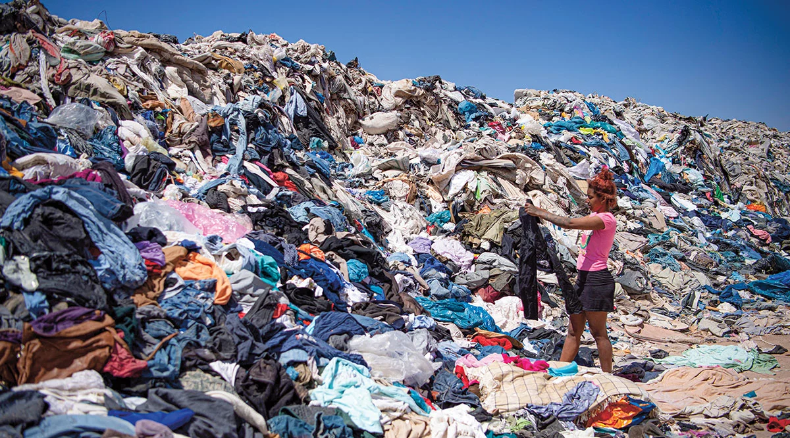

Introduction
Finding a shirt for less than ten dollars is easier than ever. The brands Shein, Zara, H&M, Forever 21, and Uniqlo enable customers to purchase new fashion items at extremely low costs because they promote their products as stylish and simple to use and affordable to buy. Social media platforms have created a faster pattern of consumption because influencers create content that shows their new clothing purchases which include multiple items that cost less than one complete outfit from a typical store. Fast fashion appears to customers as an eco-friendly option to purchase trendy items which they can use to create various outfit combinations. The budget-friendly options enable users to test new fashion trends while they build their closet with minimal financial investment.
The appealing low prices of these products create a deceptive value that results in hidden costs which exceed real expenses. The production of each cheap clothing item creates an operational framework which depends on rapid output and relentless product demand. The customer sees a bargain at the payment point which creates a hidden cost through excessive product production that damages the environment while violating worker rights. The production process of three dollar clothing necessitates the acquisition of raw materials and water and transport services and workforce and power resources. The distinction exists because businesses transfer their expenses to their personnel and the ecosystem rather than charging those costs to their clients.
Fast fashion proves to be more than an inexpensive clothing option. The fashion industry revolutionizes every aspect of its operations from production methods through marketing strategies to customer purchasing and product disposal. The industry now requires customers to make new purchases because it has developed products that people will throw away after only a few uses. People today treat clothing as if it were something they should throw away after one use. People today buy more products than they used to but they wear each item less often and they throw it away faster than before.
According to the
World Bank
,
global clothing production has roughly doubled since 2000 while consumers buy more clothing and discard it more quickly than previous generations.
The research project investigates fast fashion's actual expenses through its impact on textile manufacturing, waste sent to landfills, environmental damage, and worker treatment. The primary dataset used in this project came from a Kaggle dataset on the true cost of fast fashion containing more than 3,000 rows of data on production, waste, emissions, water usage, and labor across multiple countries and brands. People perceive fast fashion as an affordable option but it generates hidden costs which impact both the environment and the workforce that makes these clothes.
“Cheap clothing isn’t actually cheap — the cost is simply shifted elsewhere.”
What Is Fast Fashion?
Fast fashion prioritizes speed, volume, and low prices over durability and sustainability. Instead of releasing only seasonal collections, many brands now release new products weekly or even daily.
The fast fashion industry produces clothes through a system which produces cheap garments at high speed and large quantities while sacrificing product quality and environmental protection. Fast fashion companies introduce new merchandise to the market at an ongoing pace which creates a different product release pattern than traditional fashion systems which produced limited seasonal collections.
According to
NielsenIQ
,
ultra-fast fashion brands like Shein create product development cycles which they complete within hours because they launch thousands of new products every day. The report found that Shein introduced roughly 315,000 new items in 2022 alone which exceeded the combined total of new products launched by Zara and H&M. The company maintains product availability through continuous new item releases which creates rapid fashion trends and supports a wasteful consumer behavior pattern.
The fashion industry now experiences permanent changes because of its fast-paced product changes. People now treat clothing as something that they will use for a limited period instead of considering it as an item which they will wear for many years. Customers are persuaded to buy cheap products which they will use only a few times before throwing away instead of choosing sturdy items which will endure for multiple years. The research demonstrates that people use their clothes for shorter durations now compared to previous generations because they moved towards using disposable fashion items.
Social media platforms have built a system which continues to operate without interruption. Social media platforms TikTok Instagram and YouTube create a system which makes it necessary for people to buy new clothes because they show fashion hauls and microtrends and daily outfit videos. Fast fashion brands optimize their operations through two methods which involve reducing production times and delivering new products to stores at exceptionally rapid rates.
Fast fashion has experienced rapid expansion because online shopping has become more popular. The customers can now acquire extensive collections of clothing because they can easily make purchases and their orders will arrive within a few days. The combination of free shipping and free returns creates a system that promotes excessive consumer behavior, which results in people making impulse purchases of products they will not use in the future.
The fast fashion industry operates through international supply networks which focus on achieving maximum operational performance while reducing all financial expenditures. Manufacturing processes in the fashion industry rely on establishing production facilities in locations with lower labor expenses and less strict environmental protection laws. The business maintains affordable pricing because it transfers multiple environmental and human health costs to other locations.
The fast fashion industry has grown through its understanding of this system because it controls all business operations and affects environmental and social impacts. The research data from this project demonstrates how cheap clothing leads to excessive consumer behavior which results in both environmental and social costs that remain hidden from public view.
The Overproduction Problem
The dataset shows an obvious pattern which proves that clothing production levels have remained constant throughout different time periods. The production numbers show minor year-to-year variations but the total production volume remains high because the industry produces large quantities of clothing throughout each year.
The graph which studies yearly clothing production shows that the industry maintains its high production levels even during years which see slight decreases in output. The primary design of fast fashion retailing depends on two essential elements which include ongoing product restocking and regular introduction of fresh merchandise.
The public demand for fashion products which emerge from fast trend cycles creates sustained production output. Consumers now prefer to shop for clothing constantly rather than making seasonal or infrequent purchases. The brands introduce their new fashion lines at two to three week intervals while certain brands choose to launch new products every single day which creates a demand for constant purchasing and product substitution.
Real-world examples help demonstrate what this level of production actually looks like. Shein operates its business model by adding more than 1000 new items to its online store every day. The warehouse system maintains operational efficiency through continuous inventory receipt while current stock gets exchanged for emerging fashion trends. Social media influencers display their monthly or weekly fashion collections through videos which show their multiple purchases of low-cost clothing items.
This system depends on overproduction. According to the
Ellen MacArthur Foundation
,
modern fashion has become an increasingly disposable system driven by rising demand and rapid production cycles. Brands produce far more clothing than consumers realistically need because the business model relies on encouraging frequent purchases and rapid replacement. The fashion industry shifted its focus from creating durable, long-lasting products to developing short-lived items designed to be sold and replaced as quickly as possible.
The production graph displays a trendline which confirms this existing pattern. The annual production numbers exhibit minor variations yet the industry maintains consistent output levels throughout the long term. The evidence demonstrates that overproduction represents an ongoing problem which affects the entire industry.
The environmental significance of this production becomes more apparent when production is analyzed alongside landfill waste.
Production and Waste

Landfill waste consistently remains high alongside clothing production, showing how fast fashion creates long-term accumulation rather than temporary consumption.
The comparison between yearly production figures and landfill waste measurements establishes a strong connection between the two datasets. Waste remains at high levels which closely follows production patterns throughout the entire period studied. The evidence shows that companies throw away most of their output instead of keeping it for future usage.
The graph creates confusion because it shows higher landfill waste numbers than the total annual production for some years. The data does not support the claim that clothing waste exceeds yearly production amounts. The total landfill waste includes all clothing items which were produced in past years together with unsold products and returned items and clothing that was used and then discarded.
The accumulation effect shows how fast fashion creates environmental pollution which lasts for a long time. After clothing production ends people keep their new items instead of throwing them away. People keep their new items until they reach either donation centers or resale markets or final disposal at landfills. Landfills will continue to expand because existing waste materials will take years to decompose even if production activities stop for a while.
The fast fashion industry creates continuous product turnover because its production processes generate waste materials. The waste output from production activities increases as companies produce more products to fulfill customer requirements. People discard their clothing after using it a few times or they choose to buy new items. According to the
World Resources Institute
,
fast fashion operates through a “linear model” centered around buying, wearing, and quickly discarding clothing. This system encourages short-term consumption rather than long-term use, contributing to growing levels of textile waste in landfills.
Several factors drive this established pattern of behavior. The use of inferior materials results in lower-quality clothes which become less durable and more likely to break after multiple uses. People throw away working clothes because fashion trends change so fast that they need to buy new items. The fabric return system has developed into a primary source of fabric waste. Online retailers choose to throw away returned products because return costs exceed restocking expenses.
Contemporary waste management practices result in the disposal of millions of tons of fabric waste into landfills every year. The majority of this waste material decomposes slowly in landfills because synthetic materials like polyester which originate from petroleum sources take decades to break down.
Fast fashion waste creates environmental damage that extends beyond landfill sites. Developing nations receive large quantities of discarded clothing which their secondhand markets cannot manage because local communities face challenges with the excessive number of donated items. Thrift stores face operations challenges because they receive more clothing donations than they can sell in their stores.
Environmental Consequences
Fast fashion creates environmental damage which goes beyond the visible waste it generates. The dataset shows that clothing production emits carbon emissions which stay at high levels throughout the year while their waste reaches landfills. The total emissions show an upward trend which continues to grow because emissions occur at various levels throughout each year. The continuing operation of production facilities at high output levels leads to ongoing environmental damage which affects the entire manufacturing sector.

Despite yearly fluctuations, carbon emissions from fast fashion remain consistently high, reflecting the industry’s ongoing environmental impact.
The fashion industry emits carbon dioxide emissions through multiple different processes. Textile and garment manufacturing facilities need to consume vast quantities of power for their production operations. The transportation sector produces high emissions because shipping companies move clothing and raw materials through international supply chains until their delivery to end users. Fast fashion products need to pass through various countries for their production and distribution processes, which leads to greater carbon emissions within the industry.
The public fails to recognize fast fashion's environmental damage because they cannot see most emissions from this industry. Shoppers do not notice carbon emissions because these emissions remain invisible during their shopping experience, unlike visible pollution and overflowing landfills. The website displays cheap clothing options, but consumers cannot see the environmental systems which exist for producing and delivering those items.
Fast fashion production creates significant environmental damage through its water consumption practices. Cotton production requires substantial water resources to sustain its operations. The manufacturing process of a single cotton garment needs more than 10000 liters of water, which includes both cultivation and production.
Synthetic materials create extra environmental problems. The production of polyester and other materials requires fossil fuels which result in microplastic pollution during washing. Plastic fibers that measure less than one millimeter in size travel through laundry systems and enter waterways before building up in oceans and aquatic ecosystems.
Fast fashion creates environmental impacts that operate across multiple levels of the ecosystem. Reporting from
Wildlife and Welfare
also highlights how fast fashion contributes to pollution, excessive water use, and unsafe labor conditions throughout global supply chains. The public sees waste through overflowing landfills and discarded clothing while emissions together with resource depletion create hidden waste that causes equivalent environmental harm.
The emissions graph evaluated in this project demonstrates that the fashion industry causes persistent environmental damage which extends beyond particular areas. The overall trend shows increased emissions even though certain years experience slight decreases in emissions. Fast fashion creates environmental strain because its operational structure requires excessive resource consumption.
The actual environmental expenses of inexpensive clothing extend well beyond the amount that customers spend during their shopping experience. The industry generates ongoing environmental damage because it relies on mass production together with quick product changes and worldwide shipping operations.According to
Earth.org
,
the fashion industry is responsible for roughly 10% of global carbon emissions and produces massive amounts of textile waste each year.
Water usage also plays a major role in environmental damage. Cotton production requires enormous amounts of water, while synthetic materials contribute to microplastic pollution in oceans and waterways.
The Hidden Human Cost
The fast fashion industry requires inexpensive labor to operate while it generates environmental damage. The dataset that studies worker earnings and product costs reveals an additional hidden aspect of the industry’s low-cost operation.

Lower-priced clothing is often associated with lower worker wages, suggesting that inexpensive fashion frequently depends on reduced labor costs.
The labor graph which compares average item prices to worker wages shows a downward slope which indicates that people who buy cheaper clothing tend to receive lower wages. The trend shows that businesses which want to lower their prices need to cut their expenses for their employees even though the relationship between the two variables shows irregular patterns throughout the data. The existing situation demonstrates how international fast fashion supply networks operate. Many garments are produced in countries where wages are significantly lower than in Western markets. Factories face continuous demands to manufacture high volumes of products through inexpensive production methods within brief timeframes.
The fashion industry has documented multiple labor rights violations across its entire sector. Factory workers face dangerous work environments which include extended work periods and inadequate pay and weak work protection measures. Some employees receive wages that do not enable them to cover their cost of living. Research published through
The True Cost: The Bitter Truth Behind Fast Fashion
discusses how low wages and unsafe working conditions remain deeply connected to the fast fashion business model. The pressure to produce clothing quickly and cheaply often shifts the financial burden onto workers in manufacturing industries around the world.
Child labor continues to be a problem that affects several regions of the worldwide garment industry. The main fashion brands implement ethical sourcing standards but they encounter severe challenges when they attempt to track their supply chains in different countries. The subcontracting system enables companies to commit labor violations which remain hidden from consumers.
The Rana Plaza factory collapse in Bangladesh which happened in 2013 serves as one of the best known examples that demonstrate dangerous working conditions which existed throughout the fashion industry. The disaster brought worldwide recognition to the hazardous environments which workers had to endure while making affordable clothing for international fashion companies. According to the
Tricontinental Institute
,
Bangladeshi garment workers still endure long work hours with insufficient pay and hazardous workplace conditions several years after the factory collapse. The article shows how fast fashion companies force workers to choose production targets instead of protecting their personal safety. The Rana Plaza disaster showed how the fashion industry needs to maintain affordable prices while producing goods at high speed, which ultimately harms the health and safety of its workers.
The labor data analyzed in this project reinforces the idea that low consumer prices are not achieved without trade-offs. The existence of lower clothing prices for shoppers happens because retailers decline to pay fair wages to their employees.
Fast fashion produces its actual expenses through an unfair distribution system. Consumers see lower prices, but workers frequently absorb the pressure required to maintain those prices through low wages and difficult working conditions.
Fast fashion may appear inexpensive, but the environmental and human costs continue long after clothing is purchased.
Conclusions
The evidence shows that fast fashion creates three main problems which need to be solved because it offers affordable and convenient solutions to customers. The environmental harm continues because production activities create additional waste materials which build up during the entire supply chain process that workers experience. The project uses graph analysis to demonstrate that these problems exist as interconnected networks. The process of producing goods at high levels results in increased landfill waste while manufacturing and transportation systems create continuous carbon emissions. Businesses try to keep their product prices low because they want to minimize their expenses by using cheaper labor costs.
People now consider clothing items as temporary solutions which follow current fashion trends because of fast fashion. People now see clothing as temporary fashion items which they should replace when trends change instead of viewing it as lasting possessions. As explained by
Bridging the Gap
,
,fast fashion depends heavily on disposable consumption habits where clothing is rapidly replaced instead of worn long-term. The environmental and economic and social effects of this transformation extend beyond the impact on individual consumers.
Production activities will keep increasing textile waste and emissions and resource usage until current patterns stop. The world will keep dumping its used clothes into landfills while environmental systems will deal with ongoing pollution and emissions problems and workers in global supply chains will face persistent labor challenges.
Understanding the true cost of fast fashion does not necessarily mean consumers must stop purchasing clothing entirely. People need to understand their product consumption patterns which lead to affordable products because this information shows the importance of learning about their purchasing behavior.
The public must develop better clothing buying practices which result in longer garment use and superior products to achieve less environmental impact from these activities.
People usually spend additional money on fast fashion products because they need to pay for all associated costs. The environment and landfills and workers in the industry must all pay for fast fashion costs which people need to bear after they shop.